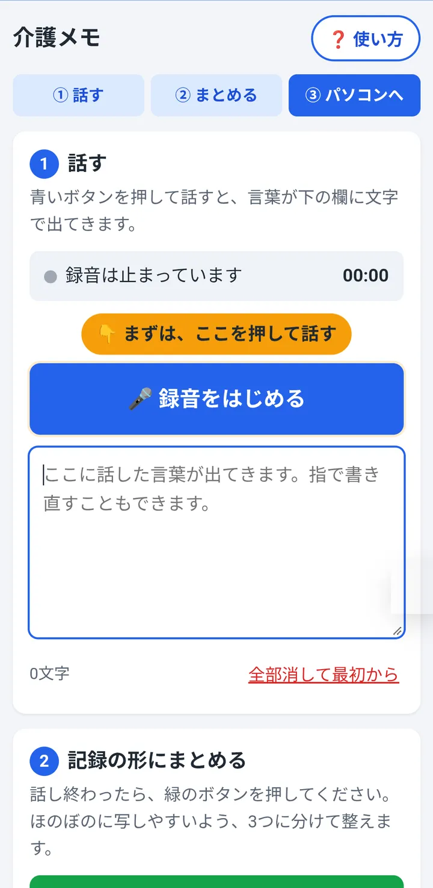
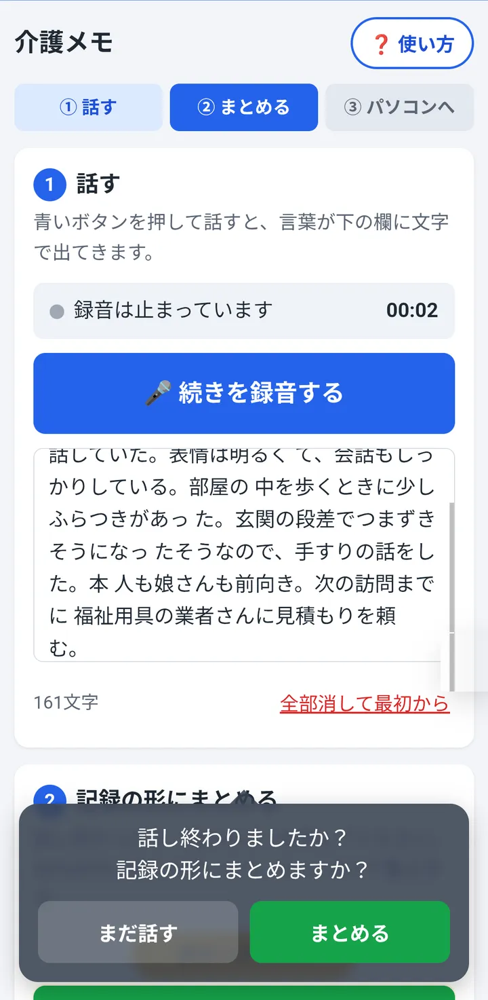
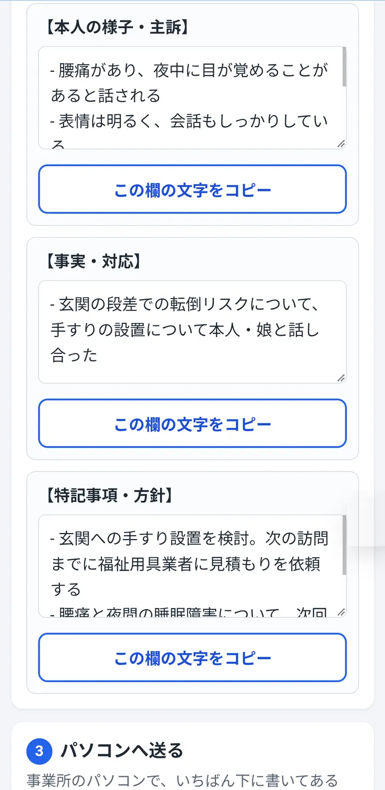
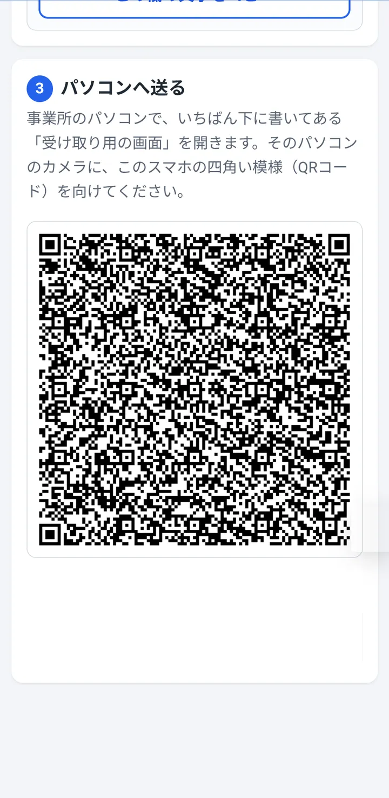
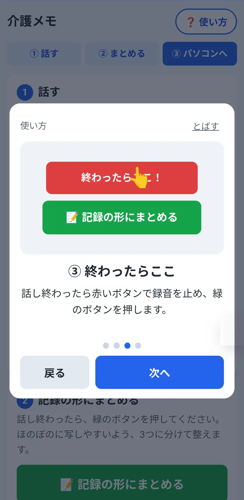
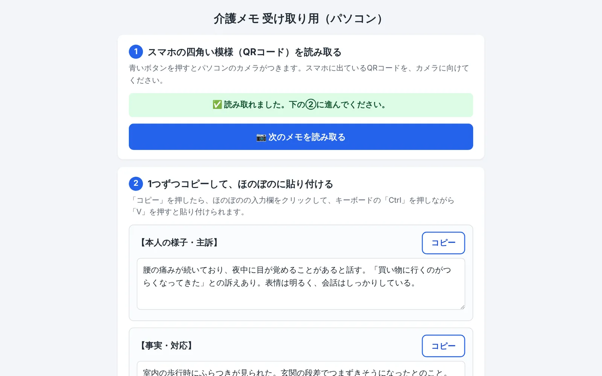

個人開発 / スマホ向けウェブアプリ / 2026年7月〜
ケアマネジャーが訪問先や移動中にスマホへ話した内容を、AI が支援経過の3つの欄に整え、事業所のパソコンへ QR コードで渡すアプリです。事業所で使っている介護ソフト「ほのぼの」はそのまま使い、外で動くケアマネと事業所のあいだをつなぐ役目にしぼりました。
えっと腰の痛みが続いていて夜中に目が覚めることがあると話していた 買い物に行くのがつらくなってきたとのこと 室内を歩くときに少しふらつきがあった 玄関の段差で…
介護の業界は IT の活用が遅れていると感じていました。介護士に比べて注目されにくいケアマネジャーの仕事に課題があるのではと考え、現役のケアマネジャーに業務の流れと困りごとを聞きました。
ケアマネジャーは利用者のお宅で聞いた内容を、事業所に戻ってから介護ソフトの支援経過に書き起こします。ほのぼのには外出先で使えるオプションがありますが追加の料金がかかり、事業所の費用の面から導入できないことがあります。そのため、メモと記憶を頼りに、戻ってからまとめて入力することになります。
話を聞くと、似た機能のソフトはすでに市場にあることも分かりました。足りないのは機能ではなく、事業所に新しい仕組みを入れる余力（お金・手間・慣れ）でした。そこで方針を変えました。
事業所の介護ソフトはそのまま使い続けられるようにし、このアプリは「外で話したことを事業所に届ける」だけにしました。パソコン側に必要なのはブラウザとカメラだけです。
利用者の個人情報を扱うので、音声や記録はサーバーに保存せず、まとめ終わったら捨てる作りにしました。下書きはスマホの中だけに残ります。ログインもありません。
使う人はデジタルに慣れていない年配の方が多いと考え、カタカナや IT の言葉を避け、次にどこを押すかを画面がいつも教えるようにしました。
AI でまとめる1回あたりの費用です。軽くて安いモデルを選び、呼ばれたときだけ動く仕組みにしました。
サーバーに保存する記録の数です。データベースは持たず、まとめた結果は返したら残しません。
スマホ用と、パソコンで受け取る用の2つだけです。事業所でソフトを入れる必要はありません。
スマホとパソコンはネットワークでつながず、QR コードを画面に映すだけで受け渡します。事業所のネットワークの設定を変えずに使えるようにするためです。
課題「整形」「認識」「エラー」のような言葉や、ファイル名がそのまま画面に出ていました。
対応「録音は止まっています」「記録の形にまとめる」のように、そのまま行動につながる言い方に書き直しました。
課題機能は動いても、初めての人には何から始めて、どこで終わるのかが分かりにくい画面でした。
対応「① 話す → ② まとめる → ③ パソコンへ」を上にいつも出し、次に押すボタンを黄色の吹き出しで示すようにしました。
課題話し終わったあと、まとめるボタンまでたどり着かずに終わってしまうことが考えられました。
対応録音を止めて8秒たつと「まとめますか？」とふきだしで聞くようにしました。すぐ出すと話の途中で邪魔になるので、間をとっています。
課題スマホの音声入力は、しばらく話すと勝手に止まります。画面が暗くなっても止まります。
対応切れたら自動でつなぎ直し、文字は随時スマホに保存するようにしました。録音中は画面が暗くならないようにしています。
課題日本語をそのまま QR コードにすると、パソコン側で読み取ったときに文字が化けることがありました。
対応文字を英数字の形（Base64）に変えてから QR コードにし、受け取る画面で元に戻すようにしました。
課題ホーム画面に追加したアプリが古い画面を覚えていて、改良がなかなか届きませんでした。
対応画面は毎回ネットから取り、つながらないときだけ保存しておいた画面を出すようにしました。
実機（Android）の画面です。記録の内容は説明用の架空の例です。






現場のスマホは機種もブラウザもさまざまなので、フレームワークを使わず、画面ごとに1つのファイルで動くようにしています。サーバーは呼ばれたときだけ動く仕組みにして、使わない月の費用がほとんどかからないようにしました。
HTML / CSS / JavaScript の1ファイル。音声入力は Web Speech API、画面を暗くしないのは Screen Wake Lock API、QR コードは qrcode-generator です。manifest.json と Service Worker でホーム画面に追加できる PWA にしています。公開は Vercel です。AWS Lambda（Node.js）と API Gateway の HTTP API で受け、Amazon Bedrock の Claude Haiku 4.5 で3つの欄に整えます。html5-qrcode でパソコンのカメラから QR コードを読み取り、欄ごとに分けて表示します。最初の試作は AI の Gemini に相談しながら作り、2026年10月からは AI コーディングアシスタントの Claude で改良を続けています。変更はプルリクエストで受け取り、スマホの実機で確かめてから取り込んでいます。
現場の課題探しとケアマネジャーへのインタビュー、何を作り何を作らないかの決定、AWS の構成と構築（API Gateway・Lambda・Bedrock の設定）、使う人を考えた言葉や導線の指摘、実機での動作確認、変更を取り込むかどうかの判断を担当しました。
画面のコードの実装と作り直し、使い方の説明のアニメーション、不具合の原因の調査を任せました。出てきた案を採用するかどうかは、自分で決めています。